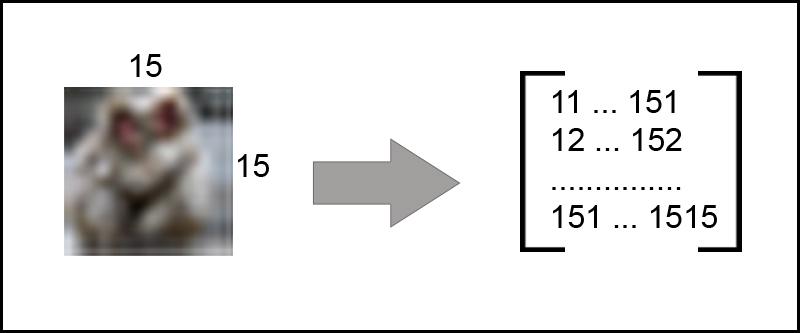
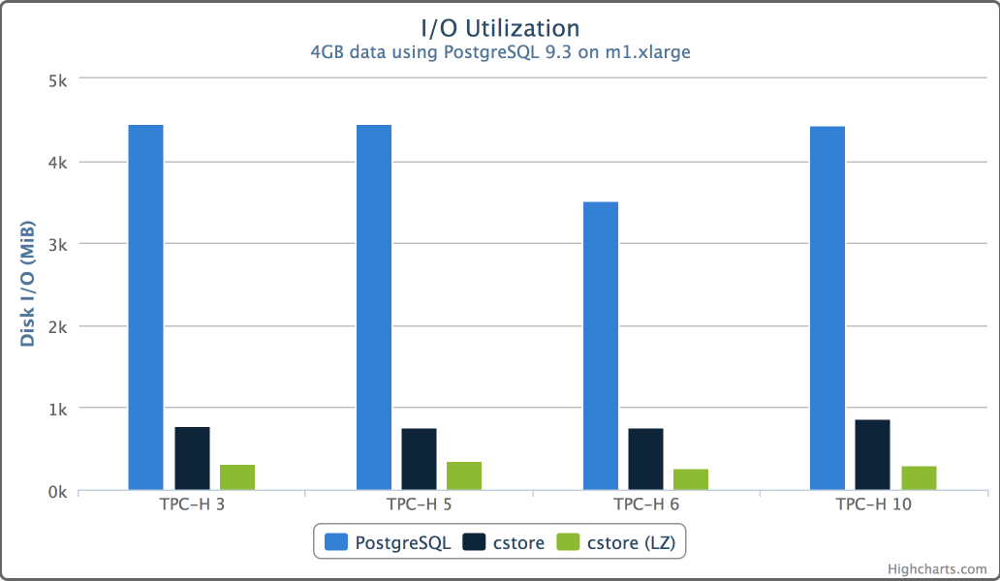
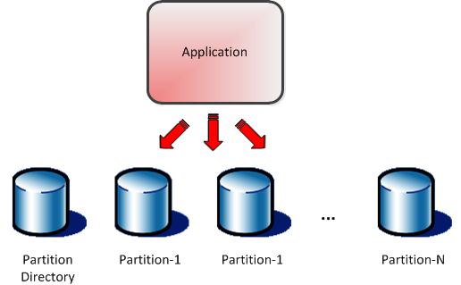

Supercharge
your PostgreSQL
with extensions
Brought to you by Alexey Vasiliev, Railsware

Alexey Vasiliev, Railsware
Brought to you by Alexey Vasiliev, Railsware
PostgreSQL ("Postgres") - is an object-relational database management system (ORDBMS) with an emphasis on extensibility and standards-compliance. Based on the SQL language and supports many of the features of the standard SQL:2011. PostgreSQL evolved from the Ingres project at the University of California, Berkeley. In 1982 the leader of the Ingres team, Michael Stonebraker, left Berkeley to make a proprietary version of Ingres. He returned to Berkeley in 1985 and started a post-Ingres project
$ CREATE TABLE users (
name text NOT NULL,
username text NOT NULL
);
$ CREATE UNIQUE INDEX unique_username_on_users
ON users (username);INSERT INTO users (name, username) VALUES ('John Doe', 'john');
INSERT INTO users (name, username) VALUES ('Doe, John', 'JOHN');
-----------+----------
name | username
-----------+----------
John Doe | john
Doe, John | JOHN
-----------+----------CREATE UNIQUE INDEX unique_username_on_users
ON users (lower(username));
INSERT INTO users (name, username) VALUES ('Doe, John', 'JOHN');
-- ERROR: duplicate key value violates unique
constraint "unique_username_on_users"
-- DETAIL: Key (lower(username))=(john) already exists.SELECT * FROM users WHERE username = 'john';
-- ----------+----------
-- name | username
-- ----------+----------
-- John Doe | john
-- ----------+----------
-- (1 row)SELECT * FROM users WHERE username = 'jOhN';
-- ------+----------
-- name | username
-- ------+----------
-- (0 rows)SELECT * FROM users WHERE lower(username) = lower('jOhN');
-- ----------+----------
-- name | username
-- ----------+----------
-- John Doe | john
-- (1 row)Provides a case-insensitive character string type, citext
CREATE EXTENSION IF NOT EXISTS citex;
CREATE TABLE users (
name text NOT NULL,
username citex NOT NULL
);
CREATE UNIQUE INDEX unique_username_on_users
ON users (username);SELECT * FROM users WHERE username = 'jOhN';
--- ----------+----------
--- name | username
--- ----------+----------
--- John Doe | john
--- (1 row)test=# select '$4.999'::money;
money
-------
$5.00
(1 row)
# CREATE DOMAIN gasprice AS numeric(6,3);
CREATE DOMAIN
# SELECT 4.999::gasprice;
gasprice
----------
4.999
(1 row)NASA lost its $125-million Mars Climate Orbiter because spacecraft engineers failed to convert from English to metric measurements when exchanging vital data before the craft was launched.
# CREATE extension unit;
CREATE EXTENSION
# SELECT '100 lb s'::unit - '100 N s'::unit;
ERROR: dimension mismatch in "-" operation:
"45.359237 kg*s", "100 m*kg/s"# CREATE DOMAIN acceleration AS unit CHECK (
dimension(VALUE) = '1 m*kg/s'
);
# SELECT 100::acceleration;
ERROR: cannot cast type integer to acceleration
LINE 1: SELECT 100::acceleration;
^
# SELECT '100 lb s'::acceleration;
ERROR: value for domain acceleration violates
check constraint "acceleration_check"# CREATE EXTENSION "uuid-ossp";
CREATE EXTENSION
# SELECT uuid_generate_v4();
uuid_generate_v4
--------------------------------------
16778dae-c41f-447f-ace9-554e7e524d55
(1 row)CREATE TABLE pets
(
id text NOT NULL DEFAULT uuid_generate_v4(),
name text NOT NULL
);$ SELECT user_id, path FROM comments WHERE path <@ '0001.0003';
user_id | path
---------+--------------------------
6 | 0001.0003
8 | 0001.0003.0001
9 | 0001.0003.0002
11 | 0001.0003.0002.0001
2 | 0001.0003.0002.0002
5 | 0001.0003.0002.0003$ EXPLAIN ANALYZE SELECT user_id, path FROM
comments WHERE path <@ '0001.0003';
QUERY PLAN
-----------------------------------------------------
Index Scan using path_gist_comments_idx on comments
(cost=0.00..8.29 rows=2 width=38)
(actual time=0.023..0.034 rows=12 loops=1)
Index Cond: (path <@ '0001.0003'::ltree)
Total runtime: 0.076 msThe pgcrypto module provides cryptographic functions for PostgreSQL
$ SELECT crypt('password', gen_salt('bf'));
crypt
--------------------------------------------------------------
$2a$06$NxaXgw9wQ1fKgoSfp4qgPeA8zBZiFJ12bKqMtblj0FT/e2IO2v93u
(1 row)$ select (
'$2a$06$NxaXgw9wQ1fKgoSfp4qgPeA8zBZiFJ12bKqMtblj0FT/e2IO2v93u' =
crypt(
'password',
'$2a$06$NxaXgw9wQ1fKgoSfp4qgPeA8zBZiFJ12bKqMtblj0FT/e2IO2v93u'
)
) as matched;
matched
---------
t
(1 row)Causes the server to pause briefly before reporting authentication failure, to make brute-force attacks on database passwords more difficul
# postgresql.conf
shared_preload_libraries = 'auth_delay'
custom_variable_classes = 'auth_delay'
auth_delay.milliseconds = '500'Provides a means for logging execution plans of slow statements automatically, without having to run EXPLAIN by hand
# postgresql.conf
shared_preload_libraries = 'auto_explain'
custom_variable_classes = 'auto_explain'
auto_explain.log_min_duration = '3s'# SELECT query, calls, total_time, rows
FROM pg_stat_statements ORDER BY total_time DESC LIMIT 10;
-[ RECORD 1 ]----------------------------------------------------------------------------
query | select * from x where i = ?;
calls | 2
total_time | 0.157
rows | 6# EXPLAIN SELECT * FROM testable WHERE id < 1000 ;
-----------------------------------------------------------------------------------------------
Index Scan using <41079>btree_testable_id on
testable (cost=0.30..28.33 rows=916 width=15)
Index Cond: (id < 1000)
(2 rows)$ UPDATE billing_states
SET is_active=true;
or
$ DELETE FROM users;extension that raises an error if UPDATE and DELETE are executed without specifying conditions

Storing sets of key/value pairs within a single PostgreSQL value
No need any more! We have JSONB!
PostGIS adds support for geographic objects to the PostgreSQL
$ CREATE TABLE cities (
id int4 primary key, name varchar(50),
the_geom geometry(POINT,4326) );PgSphere provides spherical data types, functions, operators, and indexing
$ SELECT spoly '{ (270d,-10d), (270d,30d), (290d,10d) } ';
spoly
-----------------------------------------------------
{(4.71238898038469 , -0.174532925199433),
(4.71238898038469 , 0.523598775598299),
(5.06145483078356 , 0.174532925199433)}
(1 row)Build in in PostgreSQL in release 8.3
$ SELECT strip(to_tsvector('The air smells of sea water.'));
strip
-----------------------------
'air' 'sea' 'smell' 'water'Making Postgres and Elasticsearch work together ("tsearch" features are useful, they're not necessarily adequate for 200 column-wide tables with 100M rows, each containing large text content)
$ CREATE INDEX idx_zdb_products
ON products
USING zombodb(zdb('products', products.ctid), zdb(products))
WITH (url='http://localhost:9200/', shards=5, replicas=1);$ SELECT *
FROM products
WHERE zdb('products', ctid) ==>
'keywords:(sports,box) or
long_description:(wooden w/5 away) and price < 100000';$ SELECT * FROM zdb_tally('products', 'keywords',
'^.*', '', 5000, 'term');
term | count
-----------------------+-------
ALEXANDER GRAHAM BELL | 1
BASEBALL | 1
BOX | 1
COMMUNICATION | 1REINDEXHOT update chains are not supported (necessitates a VACUUM FULL if a HOT-updated row is found)$ SELECT *,
thumbnail(the_img, 50) as thumbnail,
rotate_left(the_img) as rotate_left_img,
crop(the_img, 0, 0, 300, 200) as crop_img FROM images
WHERE date(the_img) > '2017-01-01'::date
AND size(the_img) > 1600;Pg_cron is a simple cron-based job scheduler for PostgreSQL (9.5 or higher) that runs inside the database
# SELECT cron.schedule('30 3 * * 6',
$$DELETE FROM events WHERE
event_time < now() - interval '1 week'$$);JavaScript is like vodka: you're okay if you just drink it, but when you say you like it, you should realize there's something wrong with you
CREATE OR REPLACE FUNCTION
psqlfib(n int) RETURNS int AS $$
BEGIN
IF n < 2 THEN
RETURN n;
END IF;
RETURN psqlfib(n-1) + psqlfib(n-2);
END;
$$ LANGUAGE plpgsql IMMUTABLE STRICT;# SELECT n, psqlfib(n) FROM generate_series(0, 30, 10) as n;
n | psqlfib
----+---------
0 | 0
10 | 55
20 | 6765
30 | 832040
Time: 17082.250 msCREATE OR REPLACE FUNCTION
fib(n int) RETURNS int as $$
function fib(n) {
return n<2 ? n : fib(n-1) + fib(n-2)
}
return fib(n)
$$ LANGUAGE plv8 IMMUTABLE STRICT;SELECT n, fib(n) FROM generate_series(0, 30, 10) as n;
n | fib
----+--------
0 | 0
10 | 55
20 | 6765
30 | 832040
Time: 17.014 msModule provides functions and operators for determining the similarity of alphanumeric text based on trigram matching
SELECT t, similarity(t, 'word') AS sml
FROM test_trgm
WHERE t % 'word'
ORDER BY sml DESC, t;Effective Similarity Search in PostgreSQL
$ EXPLAIN ANALYZE SELECT
smlar(images.image_array, '{1010259,...,2424252}'::int[]) as similarity
FROM images WHERE images.image_array %
'{1010259,1011253, ...,2423253,2424252}'::int[] ORDER BY similarity DESC;
Sort (cost=4020.94..4023.41 rows=986 width=924)
Sort Key: (smlar(image_array, '{...,2424252}'::integer[]))
Sort Method: quicksort Memory: 15520kB
-> Bitmap Heap Scan on images (cost=286.64..3971.91 rows=986 width=924)
Recheck Cond: (image_array % '{...,2424252}'::integer[])
-> Bitmap Index Scan on image_array_gist (cost=0.00..286.39 rows=986 width=0)
Index Cond: (image_array % '{...,2424252}'::integer[])$ SELECT flags, "Subject", payload FROM my_inbox LIMIT 10;
flags | Subject | payload
--------------------------------------+-------------------+---------------------
{$MailFlagBit1,"\\Flagged","\\Seen"} | Test email | Test email\r +
| |
{"\\Seen"} | Test second email | Test second email\r+
| |
(2 rows)# REFRESH MATERIALIZED VIEW CONCURRENTLY my_view;Fast columnar store for analytics with PostgreSQL
trips table with 1.1 Billion records
$ SET max_parallel_degree = 4;
$ EXPLAIN (COSTS OFF) SELECT cab_type, count(*) FROM trips GROUP BY cab_type;
QUERY PLAN
----------------------------------------------------
Finalize GroupAggregate
Group Key: cab_type
-> Sort
Sort Key: cab_type
-> Gather
Number of Workers: 4
-> Partial HashAggregate
Group Key: cab_type
-> Parallel Seq Scan on trips
trips table with 1.1 Billion records
$ SELECT cab_type, count(*) FROM trips GROUP BY cab_type;
(query take 3.5 hours)
trips table with 1.1 Billion records
sudo su - postgres -c "du -hs ~/9.5/main/* | grep [0-9]G"
81G /var/lib/postgresql/9.5/main/cstore_fdw
data is around 3.5x smaller than it was when stored using PostgreSQL's standard storage format
trips table with 1.1 Billion records
$ SELECT cab_type, count(*) FROM trips GROUP BY cab_type;
(2 minutes and 55 seconds)
HyperLogLog data structure
# CREATE TABLE daily_uniques (
date date UNIQUE,
users hll
);SELECT date, hll_cardinality(users) FROM daily_uniques;
date | hll_cardinality
------------+-----------------
2017-02-21 | 23123
2017-02-22 | 59433
2017-02-23 | 2134890
2017-02-24 | 3276247
(4 rows)Provides optimized partitioning mechanism and functions to manage partitions
PGStrom provide new GPU-based implementation for several SQL workloads like relations-join, aggregation/group-by, and so on
MADlib is an open-source library for scalable in-database analytics. It provides data-parallel implementations of mathematical, statistical and machine learning methods for structured and unstructured data